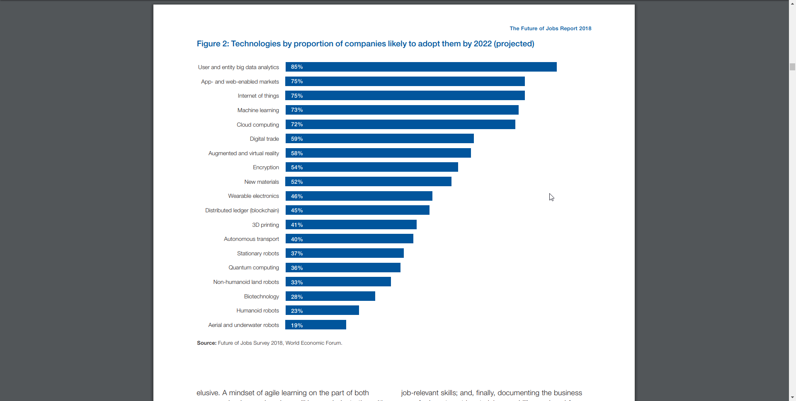
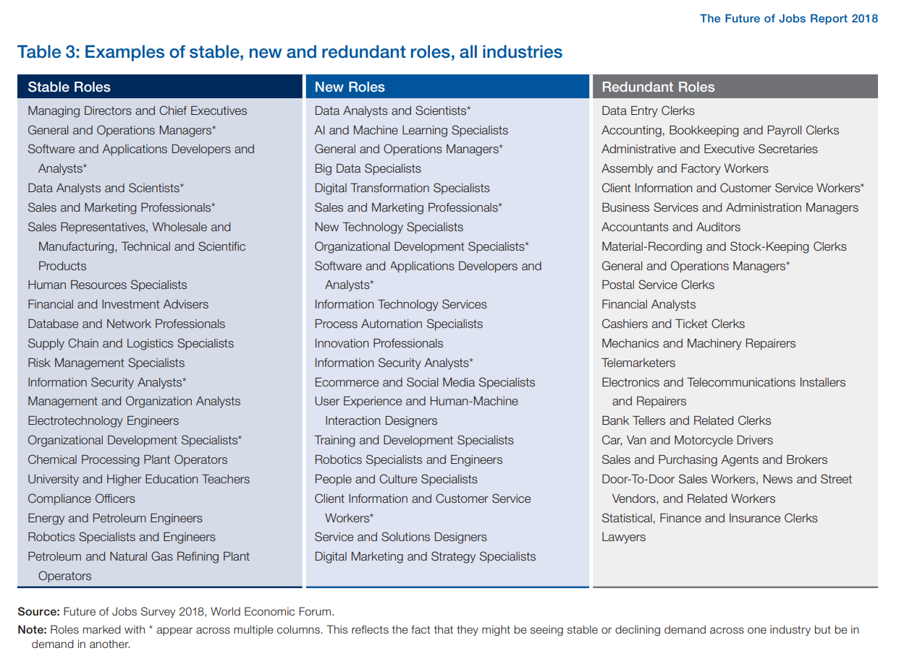

future-of-jobs-2018-world-economic-forum.pdf


Drivers of change (變革的驅動力): Four specific technological advances—ubiquitous high-speed mobile internet (無所不在的高速移動互聯網); artificial intelligence (人工智慧); widespread adoption of big data analytics (廣泛採用大數據分析); and cloud technology (雲端技術)—are set to dominate the 2018–2022 period as drivers positively affecting business growth. They are flanked by a range of socio-economic trends driving business opportunities in tandem with the spread of new technologies, such as national economic growth trajectories; expansion of education and the middle classes, in particular in developing economies; and the move towards a greener global economy through advances in new energy technologies .
Accelerated technology adoption (加速技術採用): By 2022, according to the stated investment intentions of companies surveyed for this report, 85% of respondents are likely or very likely to have expanded their adoption of user and entity big data analytics (大數據分析). Similarly, large proportions of companies are likely or very likely to have expanded their adoption of technologies such as the internet of things (物聯網) and app- and web-enabled markets (網際致動市場), and to make extensive use of cloud computing (雲端運算). Machine learning (機器學習) and augmented and virtual reality (擴增與虛擬實境) are poised to likewise receive considerable business investment.
Trends in robotization (機器人化趨勢): While estimated use cases for humanoid robots (人形機器人) appear to remain somewhat more limited over the 2018–2022 period under consideration in this report, collectively, a broader range of recent robotics technologies at or near commercialization—including stationary robots (固定式機器人), non-humanoid land robots (非人形陸地機器人) and fully automated aerial drones (全自動空中無人機), in addition to machine learning algorithms (機器學習演算法) and artificial intelligence (人工智能)—are attracting significant business interest in adoption.
Robot adoption rates diverge significantly across sectors, with 37% to 23% of companies planning this investment, depending on industry. Companies across all sectors are most likely to adopt the use of stationary robots, in contrast to humanoid, aerial or underwater
robots, however leaders in the Oil & Gas industry report the same level of demand for stationary and aerial and underwater robots, while employers in the Financial Services industry are most likely to signal the planned adoption of humanoid robots in the period up to 2022.
Changing (不斷變化中的) geography of production, distribution and value chains: By 2022, 59% of employers surveyed for this report expect that they will have significantly modified how they produce and distribute by changing the composition of their value chain and nearly half expect to have modified their geographical base of operations. When determining job location decisions, companies overwhelmingly prioritize the availability of skilled local (在地) talent as their foremost consideration, with 74% of respondents providing this factor as their key consideration. In contrast, 64% of companies cite labour costs (人力成本) as their main concern. A range of additional relevant factors—such as the flexibility of local labour laws, industry agglomeration effects (產業群聚效應) or proximity of raw materials (原料接近程度)—were considered of lower importance.
Changing employment types (不斷變化的就業型態): Nearly 50% of companies expect that automation (自動化) will lead to some reduction in their full-time workforce by 2022, based on the job profiles of their employee base today. However, 38% of businesses surveyed expect to extend their workforce to new productivity-enhancing roles, and more than a quarter expect automation to lead to the creation of new roles in their enterprise. In addition, businesses are set to expand their use of contractors (承包商) doing task-specialized work, with many respondents highlighting their intention to engage workers in a more flexible manner, utilizing remote staffing (遠端人員) beyond physical offices and decentralization of operations.
A new human-machine frontier (人機前緣) within existing tasks: Companies expect a significant shift on the frontier between humans and machines when it comes to existing work tasks between 2018 and 2022. In 2018, an average of 71% of total task hours across the 12 industries covered in the report are performed by humans, compared to 29% by machines. By 2022 this average is expected to have shifted to 58% task hours performed by humans and 42% by machines. In 2018, in terms of total working hours, no work task was yet estimated to be predominantly performed by a machine or an algorithm. By 2022, this picture is projected to have somewhat changed, with machines and algorithms (機器與演算法) on average increasing their contribution to specific tasks by 57%. For example, by 2022, 62% of organization’s information and data processing and information search and transmission tasks will be performed by machines compared to 46% today. Even those work tasks that have thus far remained overwhelmingly human—communicating and interacting (溝通與互動) (23%); coordinating (協調), developing (發展), managing and advising (管理與建議) (20%); as well as reasoning and decisionmaking (推理與決策) (18%)—will begin to be automated (30%, 29%, and 27% respectively). Relative to their starting point today, the expansion of machines’ share of work task performance is particularly marked in the reasoning and decision (推理與決策)-making, administering, and looking for and receiving job-related information tasks.
A net positive outlook for jobs (正面看就業前景): However this finding is tempered by optimistic estimates around emerging tasks and growing jobs which are expected to offset declining jobs. Across all industries, by 2022, growth in emerging professions is set to increase their share of employment from 16% to 27% (11% growth) of the total employee base of company respondents, whereas the employment share of declining roles is set to decrease from currently 31% to 21% (10% decline).
About half of today’s core jobs—making up the bulk of employment across industries—will remain stable in the period up to 2022. Within the set of companies surveyed, representing over 15 million workers in total, current estimates would suggest a decline of 0.98 million jobs and a gain of 1.74 million jobs.
Extrapolating these trends across those employed by large firms in the global (nonagricultural) workforce, we generate a range of estimates for job churn in the period up to 2022. One set of estimates indicates that 75 million jobs may be displaced by a shift in the division of labour between humans and machines, while 133 million new roles may emerge that are more adapted to the new division of labour between humans, machines and algorithms.
While these estimates and the assumptions behind them should be treated with caution, not least because they represent a subset of employment globally, they are useful in highlighting the types of adaptation strategies that must be put in place to facilitate the transition of the workforce to the new world of work. They represent two parallel and interconnected fronts of change in workforce transformations: 1) large-scale decline in some roles as tasks within these roles become automated or redundant, and 2) large-scale growth in new products and services—and associated new tasks and jobs— generated by the adoption of new technologies and other socio-economic developments such as the rise of middle classes in emerging economies and demographic shifts.
Emerging in-demand roles: Among the range of established roles that are set to experience increasing demand in the period up to 2022 are Data Analysts and Scientists (數據分析家與科學家), Software and Applications Developers (軟體與應用程式開發者), and Ecommerce and Social Media Specialists (電子商務與社會媒體專家), roles that are significantly based on and enhanced by the use of technology.
Also expected to grow are roles that leverage distinctively ‘human' skills, such as Customer Service Workers, Sales and Marketing Professionals, Training and Development, People and Culture, and Organizational Development Specialists as well as Innovation Managers. Moreover, our analysis finds extensive evidence of accelerating demand for a variety of wholly new specialist roles related to understanding and leveraging the latest emerging technologies: AI and Machine Learning Specialists (人工智能與機器學習專家), Big Data (大數據) Specialists, Process Automation Experts (流程自動化專家), Information Security Analysts (資訊安全分析), User Experience (用戶體驗) and Human-Machine Interaction (人機互動) Designers, Robotics (機器人) Engineers, and Blockchain (區塊鍊)Specialists.
Growing skills instability (成長能力不穩定): Given the wave of new technologies and trends disrupting business models and the changing division of labour between workers and machines transforming current job profiles, the vast majority of employers surveyed for this report expect that, by 2022, the skills required to perform most jobs will have shifted significantly. Global average skills stability—the proportion of core skills required to perform a job that will remain the same—is expected to be about 58%, meaning an average shift of 42% in required workforce skills over the 2018–2022 period.
A reskilling imperative (再訓練勢在必行): By 2022, no less than 54% of all employees will require significant re- and upskilling. Of these, about 35% are expected to require additional training of up to six months, 9% will require reskilling lasting six to 12 months, while 10% will require additional skills training of more than a year. Skills continuing to grow in prominence by 2022 include analytical thinking and innovation as well as active learning and learning strategies.
Sharply increasing importance of skills such as technology design and programming highlights the growing demand for various forms of technology competency identified by employers surveyed for this report. Proficiency in new technologies is only one part of the 2022 skills equation, however, as ‘human’ skills such as creativity, originality and initiative, critical thinking, persuasion and negotiation will likewise retain or increase their value, as will attention to detail, resilience, flexibility and complex problem-solving. Emotional intelligence, leadership and social influence as well as service orientation also see an outsized increase in demand relative to their current prominence.
Current strategies for addressing skills gaps (解決技術落差的現行策略): Companies highlight three future strategies to manage the skills gaps widened by the adoption of new technologies. They expect to hire wholly new permanent staff already possessing skills relevant to new technologies; seek to automate the work tasks concerned completely; and retrain existing employees.
The likelihood of hiring new permanent staff with relevant skills is nearly twice the likelihood of strategic redundancies of staff lagging behind in new skills adoption. However, nearly a quarter of companies are undecided or unlikely to pursue the retraining of existing employees, and two-thirds expect workers to adapt and pick up skills in the course of their changing jobs. Between one-half and two-thirds are likely to turn to external contractors, temporary staff and freelancers to address their skills gaps.
Insufficient reskilling and upskilling (缺乏重新與提升訓練): Employers indicate that they are set to prioritize and focus their re- and upskilling efforts on employees currently performing high-value roles as a way of strengthening their enterprise’s strategic capacity, with 54% and 53% of companies, respectively, stating they intend to target employees in key roles and in frontline roles which will be using relevant new technologies. In addition, 41% of employers are set to focus their reskilling provision on high-performing employees while a much smaller proportion of 33% stated that they would prioritize at-risk employees in roles expected to be most affected by technological disruption. In other words, those most in need of reskilling and upskilling are least likely to receive such training.
There are complex feedback loops between new technology, jobs and skills. New technologies can drive business growth, job creation and demand for specialist skills but they can also displace entire roles when certain tasks become obsolete or automated. Skills gaps—both among workers and among the leadership of organizations—can speed up the trends towards automation in some cases but can also pose barriers to the adoption of new technologies and therefore impede business growth.
The findings of this report suggest the need for a comprehensive ‘augmentation strategy’, an approach where businesses look to utilize the automation of some job tasks to complement and enhance their human workforces’ comparative strengths and ultimately to enable and empower employees to extend to their full potential. Rather than narrowly focusing on automation-based labour cost savings, an augmentation strategy takes into account the broader horizon of value-creating activities that can be accomplished by human workers, often in complement to technology, when they are freed of the need to perform routinized, repetitive tasks and better able to use their distinctively human talents.
However, to unlock this positive vision, workers will need to have the appropriate skills enabling them to thrive in the workplace of the future and the ability to continue to retrain throughout their lives. Crafting a sound in-company lifelong learning system, investing in human capital and collaborating with other stakeholders on workforce strategy should thus be key business imperatives, critical to companies’ medium to long-term growth, as well as an important contribution to society and social stability. A mindset of agile learning will also be needed on the part of workers as they shift from the routines and limits of today’s jobs to new, previously unimagined futures.
Finally, policy-makers, regulators and educators will need to play a fundamental role in helping those who are displaced repurpose their skills or retrain to acquire new skills and to invest heavily in the development of new agile learners in future workforces by tackling improvements to education and training systems, as well as updating labour policy to match the realities of the Fourth Industrial Revolution.